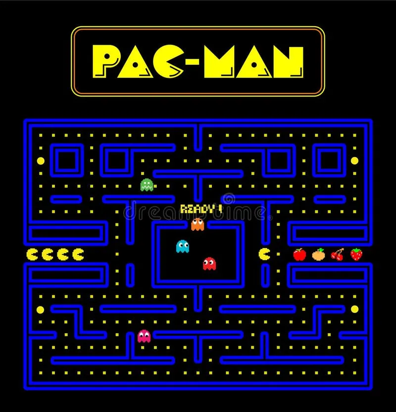
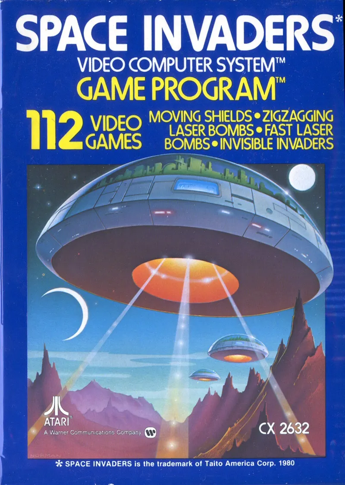
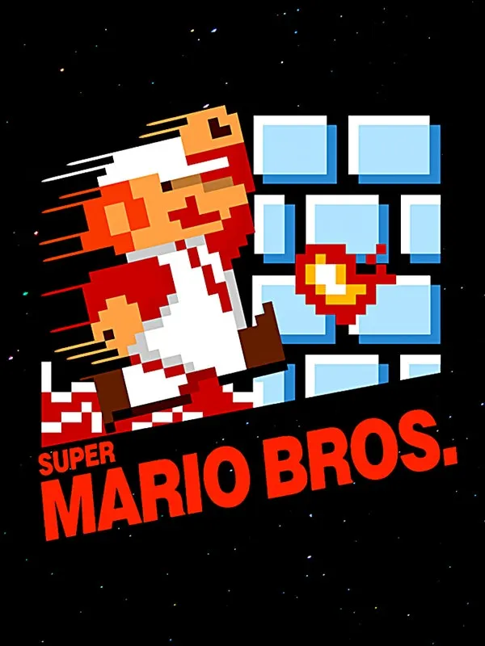
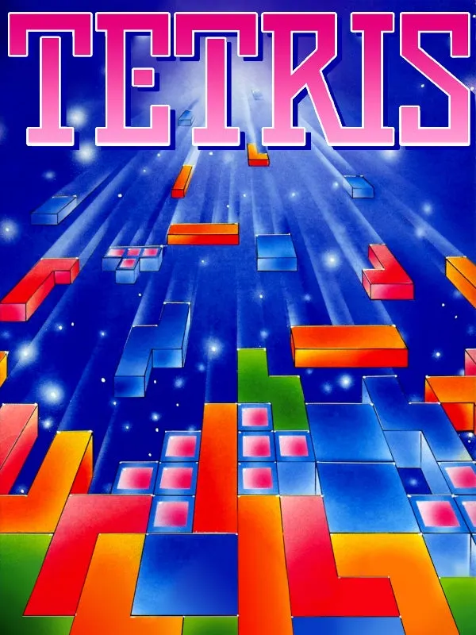
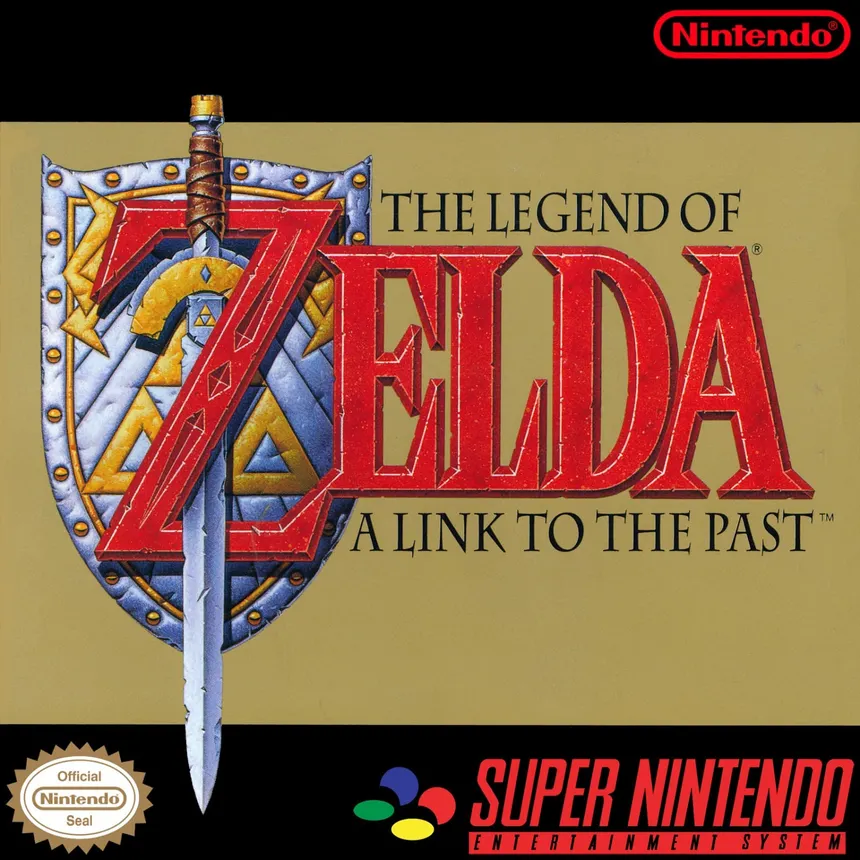
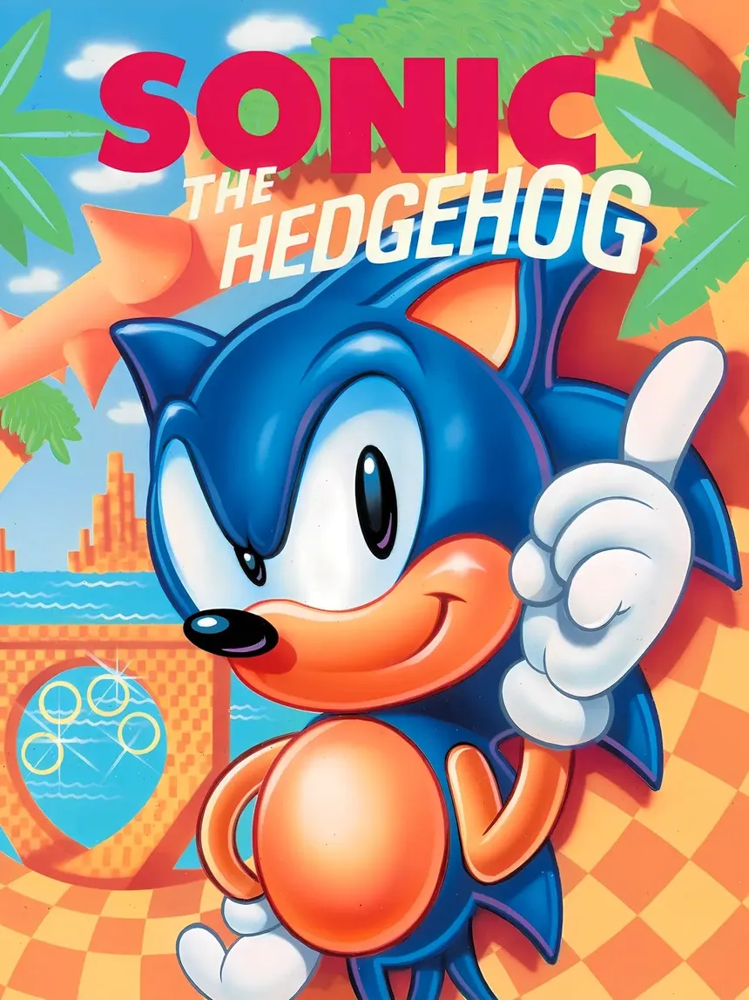
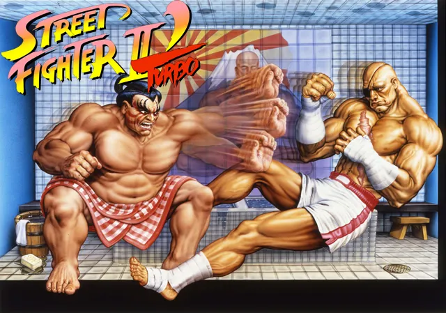
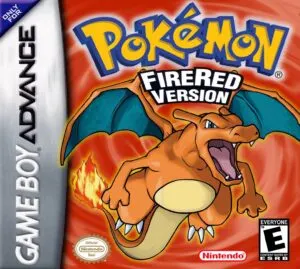
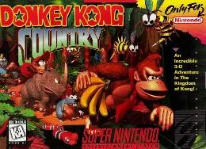
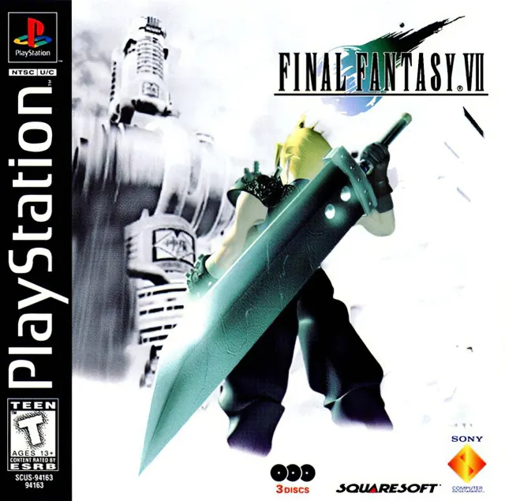

Historia, consolas y los mejores videojuegos retro de todos los tiempos. Descubre los clásicos que marcaron una generación y cómo jugarlos hoy.

Consola: Arcade - Año: 1980
descripcion

Consola: Arcade - Año: 1978

Consola: NES - Año: 1985

Consola: Game Boy - Año: 1989

Consola: Super Nintendo - Año: 1991

Consola: Mega Drive - Año: 1991

Consola: Arcade - Año: 1991

Consola: Game Boy - Año: 1996

Consola: Super Nintendo - Año: 1994

Consola: PlayStation - Año: 1997